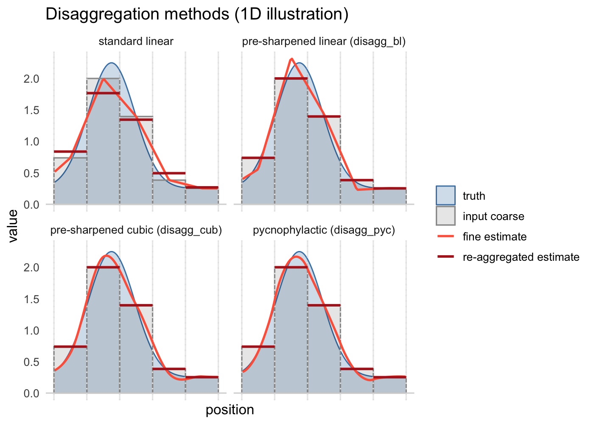

The terraces R package extends raster disaggregation methods from terra to provide Aggregation-Consistent Estimation algorithms.
When we disaggregate a coarse raster, there are typically two things we want from the fine-scale result: that it be consistent with the coarse raster (re-aggregating it recovers the input), and that it be consistent with the true fine-scale pattern underlying the coarse raster (continuous, with smooth local variation). Standard disaggregation methods sacrifice one goal or the other. terraces methods satisfy both.
terraces provides three aggregation-consistent (mass-preserving) disaggregation methods whose output, when re-aggregated, recovers the original coarse values. They include bilinear and cubic variants of pre-sharpening disaggregation (also known as prefiltering) as well as an implementation of pycnophylactic interpolation (Tobler, 1979).
Quick start
Installation
# install.packages("pak")
pak::pak("matthewkling/terraces")Usage
library(terra)
library(terraces)
coarse <- rast(nrows = 100, ncols = 100, vals = runif(10000))
# standard bilinear -- treats coarse values as point samples
fine_std <- disagg(coarse, fact = 5, method = "bilinear")
# aggregation-consistent alternatives:
fine_bl <- disagg_bl(coarse, fact = 5)
fine_cub <- disagg_cub(coarse, fact = 5)
fine_pyc <- disagg_pyc(coarse, fact = 5)When should I (not) use terraces?
Standard interpolation methods (terra::disagg(method = "bilinear") and similar functions in other packages) implicitly assume that raster values are point samples at cell centers. The terraces methods, by contrast, treat them as averages over each cell’s area. Choose based on what your data represent.
Use terraces when cell values represent averages over the area of the cell. This is the typical case for most raster products:
- Coarsened DEMs (LiDAR aggregated to coarser resolution)
- Climate model output and reanalysis products (ERA5, CHELSA, WorldClim)
- Remote sensing products (radiance integrated over the pixel footprint)
- Gridded population counts and density rasters
- Any raster produced by
terra::aggregate(fun = "mean")or equivalent
Use standard bilinear disaggregation in the less common case where cell values represent point measurements at cell centers, with no implied spatial extent. (Bilinear is the conventional choice for this case, though it can’t recover extremes that fall between sample points.)
- Surfaces interpolated from sparse point data (kriging, IDW, splines)
- Point-based model output at grid cell centers
- Synthetic rasters generated by evaluating a continuous function at grid points
- Coarsened rasters where the coarsening was nearest-neighbor sampling
Which terraces method should I use?
The package includes three disaggregation methods, all substantially more accurate than standard bilinear on typical aggregated rasters. They differ in how exactly they preserve coarse-cell means. Pycnophylactic interpolation preserves them exactly, by construction. The pre-sharpening methods are almost exactly mass-preserving, but do contain tiny residual error resulting from using a finite-radius approximation of an ideal infinite inverse kernel.
The methods are explained below, and
Pre-sharpened bilinear: disagg_bl()
Use disagg_bl() when you want a fast, drop-in replacement for terra::disagg(method = "bilinear") that’s aggregation-consistent. It applies bilinear-style smoothness with a pre-sharpening filter on the coarse raster, is non-iterative, and runs at similar speed to terra::disagg().
How it works. Standard bilinear interpolation, treated as a linear operator “interpolate then aggregate,” acts as a small smoothing convolution on the coarse grid. The package derives this smoothing kernel analytically (a 3×3 stencil), inverts it by direct linear solve, and applies the inverse as a single focal pass on the coarse raster before standard terra::disagg(). The inverse kernel depends only on the disagg factor; it’s computed once per factor and cached for the session. This is structurally similar to prefilter-based B-spline interpolation (Unser 1999), specialized to the case where the discrete data are areal means rather than point samples.
Pre-sharpened cubic: disagg_cub()
Use disagg_cub() for smoother output, when bilinear’s piecewise structure is visually objectionable but you want a fast non-iterative method. It applies Keys cubic convolution with a 5×5 pre-sharpening kernel. The result is smoother than disagg_bl() (no kinks at cell centers), but may overshoot near sharp gradients due to cubic’s negative side lobes.
How it works. Mathematically identical to disagg_bl() but with a 5×5 round-trip kernel (cubic interpolates from a 4×4 neighborhood, vs. 2×2 for bilinear). The package uses Keys cubic convolution with the standard parameter a = -0.5, matching the convention in terra::resample(method = "cubic") (verified empirically). Note that terra::disagg() does not expose cubic interpolation directly, so disagg_cub() uses terra::resample() internally for the final interpolation step.
Pycnophylactic interpolation: disagg_pyc()
Use disagg_pyc() when you want maximum smoothness. It implements pycnophylactic interpolation (Tobler, 1979), adapted to regular raster grids. The result is Laplacian-smooth (no kinks anywhere) and can be more stable near sharp gradients than the pre-sharpening methods. The algorithm is iterative and is typically substantially slower than the pre-sharpening methods for large rasters.
How it works. Standard Tobler (1979) iteration on a regular grid: start from a nearest-neighbor or bilinear disaggregation, repeatedly smooth the fine raster with a 3×3 Laplacian kernel, then add a per-block constant to restore each coarse block’s mean. Iterate until convergence. By default, this iteration is cascaded through a sequence of smaller stages — for example, disaggregating by fact = 12 runs as three sub-disaggregations at factors 3, 2, 2. When fact is large, cascading is much faster than running a single iteration at the full fact and can give smoother results.
A visual comparison
Here’s a 1D illustration of standard linear interpolation versus the three terraces methods. The three terraces methods are all mass-preserving (aggregation-consistent), but differ in their assumptions about within-block structure.

This depiction assumes that you start with a coarse input raster whose cell values (gray bars) represent averages of a likely unknown fine-scale pattern (blue curve). Each of the disaggreation methods estimates a different fine-scale pattern (orange), which could in theory be compared to the truth to assess accuracy. Re-aggregating the fine-scale estimates to coarse-scale means (red) fails to recover the input values for standard interpolation, but matches them closely for the three mass-preserving methods.
Edge effects
Pre-sharpened disaggregation has a boundary band where mass preservation and smoothness are slightly degraded relative to the interior, resulting from the focal pass’s reflective extension and terra’s own boundary fallback for cubic and bilinear. For typical raster sizes this band is minimal, but you can inspect it with edge_effects(), which returns a fine-resolution mask of the affected zone. Use it to drop affected cells from results when boundary reliability matters (e.g. small rasters, mosaic tiling, or regions of interest near edges).
Pycnophylactic disaggregation has a milder version of this issue: its smoother extends beyond the raster at boundaries, slightly reducing smoothness within ~1 coarse cell of the edge, but mass preservation remains exact everywhere.
References
- Tobler, W. R. (1979). Smooth pycnophylactic interpolation for geographical regions. J. Am. Stat. Assoc. 74(367), 519–530.
- Keys, R. G. (1981). Cubic convolution interpolation for digital image processing. IEEE Trans. Acoust. Speech Signal Process. 29(6), 1153–1160.
- Unser, M. (1999). Splines: a perfect fit for signal and image processing. IEEE Signal Processing Magazine 16(6), 22–38.